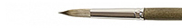

Кисть имитация мангуста
Краткое описание товара
Кисть Roubloff имитация мангуста круглая № 2
Характеристики товара
| Для: | масла | акрила | гуаши | темперы | акварели | туши |
|---|---|---|---|---|---|---|
| + | + | + | + | + | — | |
| Производитель: | Roubloff | |||||
| Серия: | 1Т14 | |||||
| Категория: | Кисти | |||||
| Подкатегория: | Синтетика | |||||
Подробное описание товара
Волос по своим характеристикам приближен к волосу мангуста.
Из него получаются кисти, прекрасно подходящие для работы
с жидкими красками. Кисть круглая с укороченной выставкой
из имитации мангуста.
Обойма медная, хромированная, ручка
короткая, пестрая глянцевая.
-
✒ Жесткость:
1 из 4
-
✒ Номер:
2
-
✒ Назначение:
Используется для прорисовки фигур и округлых контуров.
Подходит для для масла, акрила, гуаши, темперы.
Цена
120 руб.